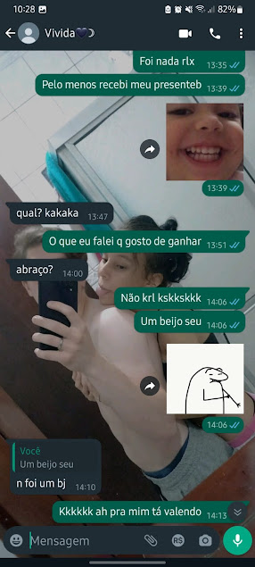

13/05/2022 InÃcio
Bom... Se você ta lendo isso aqui, é porque deu tudo certo. É porque eu consegui, você conseguiu, nós conseguimos.
Eu poderia começar dizendo que eu te amo, mas você já sabe disso.
Então vou começar contando como tudo começou...
Estava Eu, em um dia bem intediante ajudando meu pai na reforma da minha atual casa, enquanto eu descansava.
decidi abrir o instagram da escola, por curiosidade e ver as pessoas que estudavam lá atraves das pessoas
que o Instagram da escola seguia. Até que eu achei o seu perfil, e até tirei print porque minha internet
estava ruim e fiquei com medo de acabar perdendo ele ksjskkkkk sla
Eu tenho esse print até hoje, e indo nos dados de quando foi tirado lá mostra que foi no dia 13/05/2022
o que significa? 4 dias antes da gente conversar pela primeira vez. Mas antes disso, eu ja tinha certeza
do quanto eu queria conversar com você e te conhecer, só precisava de coragem mesmo kjsksjkskkkk
Esse é o print

Eu lembro que quando eu vi a primeira foto do perfil, Uauu Que garota linda, eu me encantei de verdade e você
disso, afinal eu sempre pedia pra você desarquivar aquela foto, eu achava ela simplesmente perfeita
e ainda acho, apesar de você não gostar dela, ela sempre vai ser uma das minhas fotos preferidas.
Mais enfim... Eu lembro que eu cheguei na escola e na primeira oportunidade que eu tive já falei de você
Para o grupinho de colegas que eu tinha, um deles era o kaua, e advinha... pra minha sorte ele conhecia
você, ele se ofereceu pra fazer a ponte e eu disse que ia pensar, tava com muito medo de mais um decepcão
e com vergonha. Passou um tempo e então eu chamei ele no Whatsapp e falei que ele poderia fazer a ponte.
e pra minha surpresa ele me respondeu, falou que você pediu pra eu te chamar. Eu te chamei e o resto você
já sabe né ksjskjskskk ou não porque esquece das coisas rápido. Mas tudo bem isso não é tao relevante pra hoje.
25/05/2022 Primeiro Encontro
Passado quase 2 semanas que a gente tava conversando, A gente finalmente se viu pessoalmente pela primeira vez.
Eu lembro que eu não aguentava mais conversar com você pelo celular e não poder te ver, eu contava os dias
pra poder te conhecer pessaolmente e te dar um abraço. Até que você me mandou mensagem dia 25/05/2022 falando
que ia pra escola, eu já fiquei em choque, mas mantive a calma e perguntei se você queria me encontrar e pra
minha surpresa você falou que sim.
Eu lembro que eu estava na aula de eletivas e as pessoas do meu grupinho faltaram, então eu fiquei com a Bruna
(a que você conheceu no dia que me esperou no curso pra gente sair), eu falei pra ela a situação e ela me ajudou,
falou que eu deveria te encontrar e me ajudou a inventar uma mentira pros meus pais. Afinal eu sempre ia pra
casa depois da escola pra almoçar, e naquele dia eu não ia poder porque precisava te ver, então ela me ajudou a
arrumar uma desculpa,e deu certo. Foi chegando a hora de ir embora e meu coração ja começou a acelerar, comecei
a pensar em um milhão de coias que poderiam dar errado, você não gostar de mim, meus pais descobrirem, você me
achar feio ksjskkkkkk, me achar muito pequeno, aaaa sla, eu só lembro do meu coração desparado e um milhão de
coisas passando pela minha cabeça. Mas mesmo assim tentei ficar calmo e fui subindo pra pracinha, onde você
pediu pra eu te encontrar. Fiquei sentado nas mesinhas te esperando e pensado em tudo o que poderia dar errado,
até que eu olho pro lado e te vejo chegando, pra minha surpresa não tava sozinha tava acompanhada do Renan e da
Giovanna, hoje em dia eu diria que isso é chato, mas naquele dia foi otimo, era tudo o que eu precisava porque
eu sou muito timido e vergonhoso por incrivel que pareça, então com eles dois lá seria muito melhor, eles me
ajudariam a puxar assunto e não ficaria um clima estranho de silencio entre a gente. Eu sei que eu te olhei com
aquela calça xadrez e falei "Caralhoo, ela é ainda mais bonita e estilosa pessoalmente", você tava vindo na
minha direção e entao eu levantei pra que eu pudesse te dar um abraço, a gente se abraçou e meudeus.... Aquilo foi
e especial. Por mais que na minha cabeça ainda seria só uma ficada, tudo com você era diferente, as conversas, o
modo como a simplesmente incrivel e magico, eu sei que você não lembra de nada dessas coisas, mas eu lembro e pra
mim foi muito magico gente se tratava, o seu abraço o seu toque, tudo era diferente com você. Deve ser por isso que
foi tão especial pra mim e eu lembro de tudo. Eu tenho o print da conversa depois do nosso primeiro encontro.
Esse é o Print

Cheguei no curso e fui direto contar para o Claudio que finalmente tinha te encontrado, na verdae eu nem precisei falar.
Assim que eu cheguei ele notou o sorriso enorme que tava no meu rosto e ja sacou na hora, só perguntou pra confirmar
se era o que ele imaginava.
Você me mandou mensagem perguntando o que eu gostava de ganhar e falando que o meu cabelo era muito bom. E eu bem
espertinho respondi que gosto de ganhar um beijo seu kjskskskkk, depois falei que o seu cabelo era muito mais bonito
e perfeito que o meu e que eu achei o seu estilo muito foda, o que de fato é verdade. Mas você respondeu que um beijo
seu não valia nesse quesito do que eu gostava de ganhar ğŸ˜.
26/05/2022 Primeiro Bjinho
No dia seguinte pra minha surpresa a gente iria se encontrar de novo, bom... se sabe que eu sou paranoico né, entao já
comecei a imaginar que se não gostou de mim e etc... mais enfim, você pediu pra gente se encontrar na pracinah de novo
Dai eu fui la e fiquei esperando você chegar, você chegou e com seus amigos de novo 🙄 KJskskkkk e me perguntou se eu
queria ir até o dia com você, porque você queria comprar um Monster, eu fui com você e a Giovanna e o guelfi, fui lá
E você me deixou de lado 😠lembro que a gente estava no ultimo corredor de lá, e você com o guelfi e a Giovanna na
minha frente, dai um Veio parou bem no meio do caminho e não consegui passar, porque vocês estavam indo pro caixa
a Giovanna percebeu que eu fiquei pra trás e me esperou, e me catou pelo braço, me levou até o caixa com você e o
guelfi, bom... eu não diria ciumes, até porque naquele tempo acho que você ainda cagava pra mim, mas você me tirou
dos braços da Giovanna e ficou de braço coisado comigo KSJkjskjsksjks tudo que eu queria.
A gente voltou pra pracinha e fiquei esperando você e eles tomarem o blers, deu a hora de você entrar então nós três
começamos a descer a pracinha, chegando na esquina da escola eu ja pensei comigo mesmo, "Nossa, mais um dia com ela
e eu não tive coragem de dar um beijinho nela, mas pode ser que agora seja a hora", então eu bem discretamente hidratei
meus labios na esperança de sair pelo menos um selinho, sei lá eu senti que iria acontecer.
Fomos chegando mais perto do portão e minha esperança indo embora, até que eu me despedi da Giovanna e depois de você,
e pra minha surpresa depois do nosso abraço de despedida você me deu dois selinhos e entrou pra dentro. Meudeus....
Aquilo foi tão bom, tão magico, eu sai dali saltidando, me senti tão feliz, lembro que fui a caminho do curso todo sorrindo
mesmo que eu tenha esbarrado com meu pai na esquina da escola, e ele me levou até o curso eu lembro de esta extremamente feliz
E mais um dia cheguei no curso com um sorriso de ponta a ponta, e o Claudiao ja veio me perguntar o que tinha acontecido.
Eu tenho o Print tambem de quando cheguei no curso e a gente foi conversar.
Esse é o Print
27/05/2022 Primeiro Beijo
No dia seguinte era uma sexta, e aparentemente as coisas estavão indo super bem. A gente iria se encontrar de novo e tudo estava bem
Fui pra pracinha dessa vez, mas você já estava lá sentada nas mesihnas e envolta tinha umas 4 pessoas, eu cheguei mais perto e
vi que o Guelfi tava te abraçando😡 confesso que fiquei com um pouco de ciumes🥰 mas tudo certo, eu cheguei pra falar com você
e Você estava chorando, perguntei o que tinha acontecido e estava tentando conversar com você, mas você não conseguia me responder,
o Guelfi pediu pra eu te abraçar, e eu fiquei uns 5 minutos abraçado com você mas tive que ir embora, porque nesse dia eu não tinha
uma desculpa pra não ir pra casa almoçar, então voltei correndo pra casa e lembro de ter te mandado mensagem, pedindo desculpas por
não conseguir ficar e falei que se precisasse de mim eu estaria ali, dai você me pediu desculpas por não ter me dado atenção e que
não conseguia falar naquele momento senão iria chorar de novo.
Eu respondi que estava tudo bem e que não precisava se desculpar por nada, porque eu entendia você.
Foi passando o tempo, e o Claudio me deu a ideia de ir na sua saida pra poder te ver, eu gostei da ideia, mas não sabia o que fazer,
se eu falava a verdade para meus pais ou se inventava alguma mentira só pra poder ir te ver. Mas eu tambem nem sabia se eu podia
e se você iria querer, então perguntei pra você se eu podia e se iria gostar que eu fosse, e pra minha surpresa tu apoiou a ideia
e disse que ficaria feliz se eu fosse. Já comecei a bolar o plano pra poder ir te ver, falei pro meu pai que eu iria no
shopping com o pessoal do curso, mas que antes eu precisava passar em casa pra pegar dinheiro, ele acreditou e me levou até
em casa e depois até o shopping, eu lembro que estava quase na hora de você sair, então entrei correndo no shopping, desci
até a praçã de alimentação e fui na cacau show, comprei uma caixinha com 10 bombons pra ti, mas nem sabia se você iria gostar,
sai do shopping e fui correndo em direção a escola. Fiquei um tempinho perto de um açougue esperando dar a hora, ai fui
de verdade até a escola te encontrar, cheguei lá e você já estava do outro lado da rua me esperando, onde a gente tinha
combinado de se encontrar. Cara... Eu só consigo lembrar do sorriso que você deu ao me ver, você venho na minha direção e
me abraçou, e ali eu perdi tudo, literalemnte tudo, foi incrivel pra mim ter visto o seu sorriso e ver você vindo em direção
a mim só pra me abraçar, eu te escondi o chocolate e depois do abraço mostrei você ficou surpresa, acho que não pensou que eu
realmente fosse te levar algo. Só sei que a gente se olhou e nosso primeiro Beijo Beijo aconteceu ali mesmo, foi perfeito,
simplesmente indescritivel, tanto o beijo quanto a sensação, fiquei sem palavras. Ali eu tenho certeza que o tempo ao
meu redor parou, e as estrelas pararam só pra observar aquele momento incrivel. Eu sei que eu to falando aqui todas
essa bobagens e que você nem se lembra e esse beijo não significou tudo isso pra ti. Mas tudo bem, porque eu to
contando do que eu senti e de como foi pra mim, que no caso foi MAGICO.
Esse é o Print

02/06/2022 Primeiro te amo
A gente foi conversando e se conhecendo um pouco mais, até que o primeiro Te amo surgiu, não foi um Te amo ou um
Eu te amo, mas por incrÃvel que pareça veio de você 🤪 KSJSKkkkkk. Brincadeira, ele veio porque eu perguntei se
você iria pra escola naquele dia, e você respondeu que não porque teria que cuidar do seu irmão. Dai te xinguei
de rata e falsa kJSkskskskk, enfim... eu tenho o print tambem.
Esse é o print
Eu lembro que na hora em que eu vi a notificação dessa mensagem, eu entrei em choque, Sla não me pergunte o por que, eu
só lembro do mundo ter parado ao meu redor por uns 5 segundos, e eu não sabia se te respondia com t amo tambem,
pra nãoparecer emocionado ou por eu não ter certeza se gostava de ti e acabar te magoando depois ou então porque
pra mim a palavra T amo, Te amo, Eu te amo é muito forte sabe? E pra mim muita gente usava por usar e pra brincar
com as pessoas. Então não queria usar com você até ter certeza, porque mesmo que eu não tinha certeza se eu
gostava de ti. A possibilidade de sla, algum dia eu te magoar acabava comigo. Hoje em dia não mais porque eu tenho
certeza que eu te amo, tenho certeza de que você é o amor da minha vida e que eu quero passar cada segundo da minha
vida ao seu lado.
05/06/2022 Comecei a gostar de você
Os dias foram passando e a gente continuava conversando, e a cada dia que passava eu gostava mais de você, queria te
conhecer mais e mais, você foi se abrindo pra mim e eu fui vendo a pessoa linda que você realmente é, fui vendo
a princesa que hoje em dia posso chamar de minha, eu via o quanto você precisava de alguem que ficasse e lutasse
por você, via o quanto você precisava ser amada de verdade, do jeitinho que você merece. Eu sabia que seria dificil
mas eu estava disposto a tentar mesmo não sabendo se ainda gostava de você eu falava pra mim mesmo que eu daria o
meu melhor por você, que eu não iria te abandonar que eu iria fazer você se sentir a pessoa mais especial desse mundo.
Foi então que um dia eu tive certeza que gostava de ti, foi o dia pelo qual eu comecei a me apaixonar por você, e eu
sei que parece besta mas pra mim não é. Eu me lembro de ter acordado um dia que eu ia ir pra São Paulo com a Mari e os
guri, e eu vi que tinha mensagem sua. dois audios de quase dois minutos, por um instante eu entrei em choque, não sabia
o que esperar daqueles audios, talvez você falando que até o momento o que a gente tinha era legal mas você não queria
mais, sla... me passaram diversas coisas pela cabeça. Foi então que eu coloquei os meus fones e ouvi o audio. E cara...
aquilo foi uma das coisas mais fofas e bonitas que eu ja tinha ouvido em toda a minha vida, e foi depois de ouvir aqueles
dois audios que eu comecei a me apaixonar por você de verdade. Se quiser ouvir os audios Estão aqui.
Esses são os audios
21/06/2022 Presente de Aniversário
Eu lembro que um dia antes de eu te entregar o presente, eu sai do curso junto com o Claudiao e fui direito pro Plaza, ele foi
comigo e me ajudou a escolher o seu presente, lembro de ter te mandado mensagem perguntando se você tinha um livro de bruxaria
(O livro que eu te dei). e você respondeu que não 🙌, comprei esse mesmo hshshshs, passei na cacau show e comprei uma barra
amarga pra ti, porque a Isa falou que você gostava. chueguei em casa e fui direto pro quartinho embrulhar seu presente e
guardar ele na mochila para o dia seguinte.
Até que chegou o dia seguinte e eu estava bem ansioso, eu lembro que nas duas ultimas aulas antes de sermos liberados
eu inventei de fazer uma cartinha pra você, a pricipio era pra ser algo simples, fui escrevendo no zap e depois passar
pro papel, eu só não imaginava que passando pro papel dariam 2 folhas de caderno frente e verso kJSKjskjsksksk
mas tudo bem, terminei a carta faltando 10 minutos para sermos liberados e eu coloquei ela correndo dentro do envelope
do presente, estava muito ansioso pra te entregar o presente, não sabia se você iria gostar ou não.
A gente subiu até a pracinha e lá eu te entreguei o presente. E aparentemente você gostou e eu fiquei táo feliz que você
gostou, você nem imaginava o corre que foi pra poder tudo isso dar certo ksjksjkskkk. Eu precisava ir embora mas você
pediu pra eu ficar mais e eu fiquei, mas chegando em casa recebi uma mensagem do meu pai bem desagradavel. Ele estava
brigando comigo porque eu me atrasei pro curso, mas tudo bem pra mim valeu a pena te ver feliz sabe? Enfim eu me resolvi
com o meu pai e no final ficou tudo bem.
Print de você me agradecendo S2

Eu nem poderia imaginar que aquele teria sido um dos melhores 100 reais que eu ja gastei em toda a minha vida, porque ter visto
você feliz daquele jeito não tem preço pra mim meu amor, foi perfeito ter visto o seu sorriso, mesmo não querendo presente
e não querer aceitar, foi lindo ver a felicidade no seu olhar, não sei como você se sentiu mas eu me senti muito bem e muito
feliz.
29/07/2022 Aniversário da Giovanna
Tinha tudo pra ser mais uma sexta normal como todas as outras, mas não foi e não foi porque no dia seguinte era aniversário da
Giovanna, Você tinha dormido na casa da Giovanna e entao vocês decidiram sair e comprar algumas coisas pro Aniversário dela,
pra minha surpresa você falou que estava no ABC, que fica do lado do SENAC, e eu que não sou bobo nem nada perguntei se
poderia ir te ver, já estava tentando sair contigo fazia mais de 1 mês durante as ferias mas você sempre arrumava uma desculpa.
Pra minha surpresa nesse dia você aceitou que eu fosse lá e ficasse um tempo com vocês, eu como sempre arrumei uma desculpa
para meus pais e até sai mais cedo da aula pra ir te ver, estava com medo de você acabar indo embora e eu não conseguir te ver,
Acho que eu nunca te contei isso mas no caminho eu quase fui atropelado, sai correndo do curso porque queria chegar logo e te ver
Já estava com saudades do seu abraço. Eu me lembro de ter ficado aquelas 2 horinhas toda abraçado com você e foi incrÃvel, tambem
me lembro de termos tirado nossa primeira fotinha juntos, não foi a melhor foto mas pelo menos era uma recordação daquele dia
daquele momento e principalmente de você.
Nossa fotinha

Cheguei em casa tão feliz que a unica coisa em que eu pensava era no seu abraço e em como ficamos tão juntinhos por mais do que só 10
minutos na escola, aquilo sem duvidas foi muito marcante e importante pra mim, lembro de você me falar que foi naquele dia em Que
você se sentiu segura em meu abraço e que ele se tornou muito bom pra ti.
Eu me lembro de chegar no dia seguinte(sábado), e ter sido a festa da Giovanna, eu lembro que passei a tarde conversando contigo
você tava lele então não sei se vai lembrar, mas passou a tarde toda chamando pra mim ir lá na casa da Giovanna pra ficar com você
e até ficaria, mas não fazia ideia de onde a Giovanna morava e o principal, ela não me convidou, confesso que eu queria muito ter
ido mas pegaria mal eu chegar lá sem ser convidado. De qualquer forma aquele dia foi legal pois vi que até quando se tava lele
talvez pensasse em mim.
Foi então que chegou no Domingo, eu estava sozinho em casa então como eu sabia que você estava "perto" brinquei de você ir lá
Mas você falou que não iria porque era muito longe (era preguiça mesmo), então eu falei que iria até você e perguntei onde você
estava, você me falou que estava em uma padaria na gilda, gsuis essa padaria ficava a uns 20 minutos da minha casa. Mas como
a vontade de te ver de novo estava muito grande eu não me importei, me troquei bem rápido e sai correndo de casa, acho que foi
a priemira vez em que a minha perna começou a doer, eu corri tanto mais tanto vivida que você não faz ideia. Eu estava com tanto
medo dos meus pais chegarem e não me encotrarem em casa, mas fui mesmo assim, lembro que cheguei lá e até encontrar você e a
Giovanna demorou um pouco, fui até vocês e dei os parabens para a Giovanna, logo depois eu te abraçei e perguntei se estava
tudo bem. Lembro de você falar que sim e me mandar embora porque vocês já estavam voltando pra casa da Giovanna.
A Giovanna ficou com dó de mim por ter andado tudo aquilo só pra te dar um abraço e falou que poderia esperar um pouco, mas
eu não poderia demorar então sugeri levar vocês até a casa dela, no caminho pra casa dela você não largava o celular e acabou
pisando em falso num degrau grandão e "torcer" o pé, andamos mais um pouco e você falou que estava com muita dor, entao sentamos
na frente de um predinho e falei pra você colocar sua perna sobre a minha e você ficou fazendo massagem no seu pé.
me ofereci pra te levar no colo mas você não quis, então te levei só apoiada sobre meu ombro mesmo até a casa dela. chegando lá
ela me chamou pra entrar, e acredite eu queria muito mas estava morrendo de medo dos meus pais, então recusei mas não queria ir
embora, eu só queria mais daquelas 2 horas de sexta-feira mas sabia que era quase impossivel. então esperei vocês duas entrarem
e voltei correndo pra casa de novo, cheguei em casa e graãs a deus meus pais nao haviam chegado, fui tomar um banho pra disfarçar
e logo em seguida eles chegaram, mas me lembro da minha dor na perna kJSkjsksksksk, mas te digo que valeu a pena ter ficado com
aquela dor por 2 dias só por ter te visto nem que tenha sido por 10 minutos. Enfim essa é a historia que talvez você nao se lembre
??/08/2022 Amigos
Bom... o que eu vou falar agora não é tão legal como as outras historias mas é necessario. lembro que quando as aulas voltaram e a
gente podia voltar a se ver, algo estava diferente, você estava diferente comigo e eu não sabia o motivo. Achei que seria somente
um dia, lembro que eu cheguei pra conversar com você e você mal olhava na minha cara, saia andando na minha frente, não me abraçou
era como se nao quisesse mais eu por perto mas não conseguia falar sabe? Mas tudo bem, eu achei que seria só um dia ruim e as coisas
voltariam ao normal. Mais então aquilo se repetiu por mais 2 ou 3 dias e eu não me aguentava, chegava no curso triste pois nao sabia
o que eu tinha feito de errado, conversei com o Claudio e falei tudo isso que estava acontecendo e ele me aconselhou a ficar quieto
e esperar passar, mas eu como teimoso que sou não ouvi. Te chamei pra conversar e falei tudo o que aconteceu e como eu me senti, e
então foi tudo por ladeira a baixo, depois desse dia as coisas que já não estavam muito boas ficaram ainda mais ruim. Teve um dia
em que eu estava na escola e você me falou que queria conversar serio comigo, fiqui em choque e me lembro de até ter chorado nesse
dia, eu sabia que algo ruim estava prestes a acontecer e talvez o nosso fim tinha chegado, mas mantive calma e esperei até o momento
da nossa conversa.
Você me pediu para que fossemos só amigos, porque você estava passando por um momento em que não entendia muito bem o que sentia
e tambem não sabia lidar com isso, então pra não me deixar mal queria continuar sendo só amigos. Obvio que eu fiquei muito triste
com isso, pois era como se tudo o que eu havia planejado e sonhado sobre nós dois foi por água abaixo. Lembro de acordar no meio da
madrugada e chorar pensando em tudo o que ja aconteceu entre a gente e no que eu queria que tivesse acontecido, e eu me culpava demais
por não ter ficado quieto e causado tudo isso, se eu tivesse aguentado e ficado quieto nada disso teria acontecido (pelo menos na
minha cabeça), hoje em dia eu entendo que uma hora ou outra aquilo poderia acontecer e antes cedo do que tarde.
Continuamos uma amizade que não era amizade kJSKsjkjsks as vezes a gente ficava e pelo menos da minha parte eu te tratava mais do que
uma amiga e isso te incomodava. Então um dia você me chamou na escola e disse que precisava conversar sobre isso, falou que eu
deveria te tratar como amiga e parar de te tratar como minha namorada, coisa que você não era. E apesar de você ter razão aquilo me
deixou mal e eu lembro que depois desse dia resolvemos dar um tempo, ficamos um pouco afastados e sem conversar durante 1 semana.
voltamos a conversar aos poucos e nos reaproximar, mas ainda amigos so que de novo não era uma amizade, eu te enxergava como algo
amais e ainda te tratava como alem de uma amiga, passado algumas semanas a gente não estava dando certo, acabavamos sempre no mesmo
lugar, foi então que decidimos dar um fim de vez e realmente se afastar, dar um tempo até que os dois estivessem prontos de fato
KJskjskskjsksjk imaginando como nós dois somos não conseguimos ficar nem 2 semanas direito sem se conversar pelo menos 2 vezes na
semana, aos poucos a gente foi voltando e as coisas estavam diferentes, não vou dar detalhes de como fomos voltando por que acho
que não vale a pena falar aqui, mas se quiser eu te conto de novo pessoalmente. Voltamos e dessa vez estavamos "sério".
14/10/2022 Primeira vez saindo juntos de verdade
Esse foi o dia em que A gente marcou de se encontrar no parque central, a primeira vez em que saimos de verdade e juntinhos, apesar
de eu não querer ter ido pois estava dodoi e não queria passar pra você e nem pra padrão eu fui forçado a ir ğŸ˜ksksjskjs mentira
eu queria muito te ver e te abraçar e te beijar, finalmente sentir você nos meus braços totalmente entregue a mim. O tempo ia
passando e eu só consigo me lembrar de como eu não queria que aquilo acabasse, não queria que a hora de ir embora chegasse,
eu lembro do tempo ter passado tão rápido e de tudo ter sido tão incrivel que nem se quer tiramos fotos ou gravamos videos
Mas graças a Deus teve uma pessoa que fez isso por nós, a Padrão se você quiser ver esses videos vou colocar um link aqui.
LINK
Não fizemos muita coisa naquele dia, literalmente passamos o dia abraçados e conversando sobre tudo e qualquer coisa
mas eu me lembro de cada segundo daquele dia ser especial, importante pra mim, marcante e valioso, vontade de guardar
aqueles momentos em um potinho.
30/12/2022 Conhecendo sua mãe
Esse dia, aaa esse dia... Eu estava tão ansioso pra finalmente conhecer a sua mãe, estava nervoso e com medo ao mesmo tempo
tinha medo da sua mãe não gostar de mim, tinha medo das coisas darem totalemnte erradas, mas não, as coisas aconteceram
de forma simplesmente perfeita. Sua mãe gostou de mim e meudeus isso é incrivel, pelo menos pra mim. Mesmo que antes eu
brincava que seus pais me amavam sem nem mesmo me conhecerem e saberem da minha existencia, eu fiquei super feliz em saber
que a sua mãe gostou de mim, e ter ido na sua casa aquele dia foi simplesmente indescritivel como tudo caminhou perfetamente
bem, eu já tinha esse sonho a um tempinho de conhecer os seus pais e de fato, era mais importante pra mim do que era pra você
mas eu ainda me lembro da sensação dentro do carro em caminho a sua casa, uma sensação de conquista sabe? de que tudo aquilo
que antes eu havia planejado finalmente estava acontecendo, e eu so conseguia pensar naquele dia se repetindo mais e mais vezes
indo na sua casa sexta a noite, passando os finais de semana cozinhando com você, e até mesmo você vindo aqui em casa. sempre
sempre pensei nisso e sonhei com isso, infelizmente meu sonho de você ir na minha casa ainda não foi realizado, mas tudo bem
tudo leva um determinado tempo, e acredito que mais cedo ou mais tarde isso ira acontecer e quando acontecer, espero que seja
incrivel pra você assim como foi incrivel pra mim conhecer a sua mãe e ir na casa dela pela 1° vez.
Aquele dia a gente não conseguiu "aproveitar" muito por conta do seu irmão, que por sinal tambem gosta muito de mim, e vivida
eu quero que você experimente a sensação de quando a familia da pessoa que você ama gosta de você, te acha uma pessoa legal e
bacana.
Mesmo não trocando mais de 5 palavras com a sua mãe, de alguma forma ela foi com a minha cara e gostou de mim kJSkjskjsksjk
E isso foi simplesmente otimo não teria como ser melhor, com isso só faltava uma coisa. Conhecer o seu papis, mas isso felizmente
ja aconteceu, e tambem foi melhor do que a gente esperava e aparentemente ele tambem gosta de mim assim como sua mãe.
Eu tinha ido na sua casa um dia antes do ano virar e, meudeus você não faz ideia de como isso significava pra mim
você não deve lembrar mas quando estavamos nos conhecendo eu disse que meu dia só seria bom se eu passasse a virada do ano contigo
na prai e de roupinha combinando kjsksjsksk, isso não aconteceu, mas só de pensar que eu cheguei no final do ano com você ao meu lado
cara... Não tem coisa mais gratificante do que isso. Não queria que a minha hora de ir embora tivesse chegado, afinal eu estava
vivendo em um sonho kjSkjskkkk e era incrivel pra mim, mas infelizmente eu tive que ir embora, e me doeu o coração ter que te deixar
e tambem me doeu ver seu irmão chorando porque eu fui embora ksjksk coitado.
Cheguei em casa e só conseguia imaginar como tudo tinha sido incrivel e como mais um dia ao seu lado me fez bem, me fez feliz
e que eu havia realizado mais um sonho meu que envolve você e mais uma grande conquista. Foi incrivel minha princesa, uma experiencia
unica e muito boa. Não tiramos fotinha quando fui la dessa vez, mas temos fotinha da 2° vez ou 3° o link ta aqui.
LINK